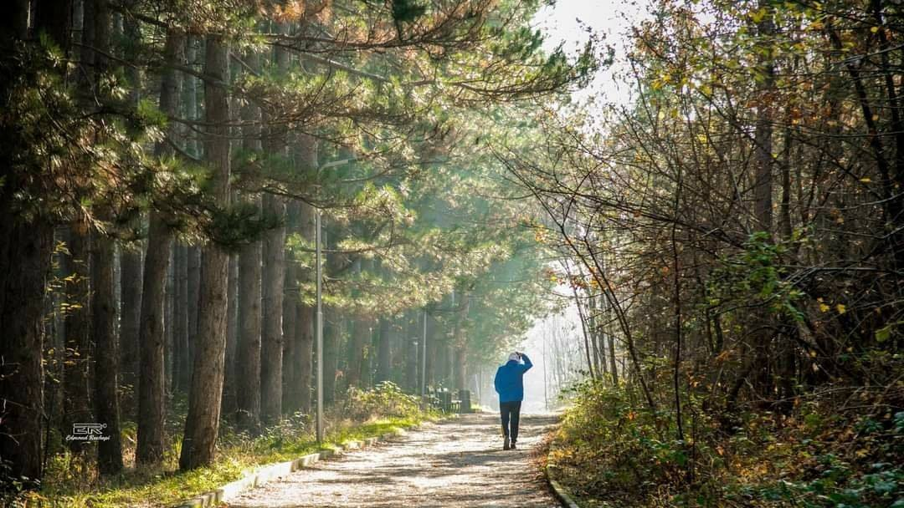
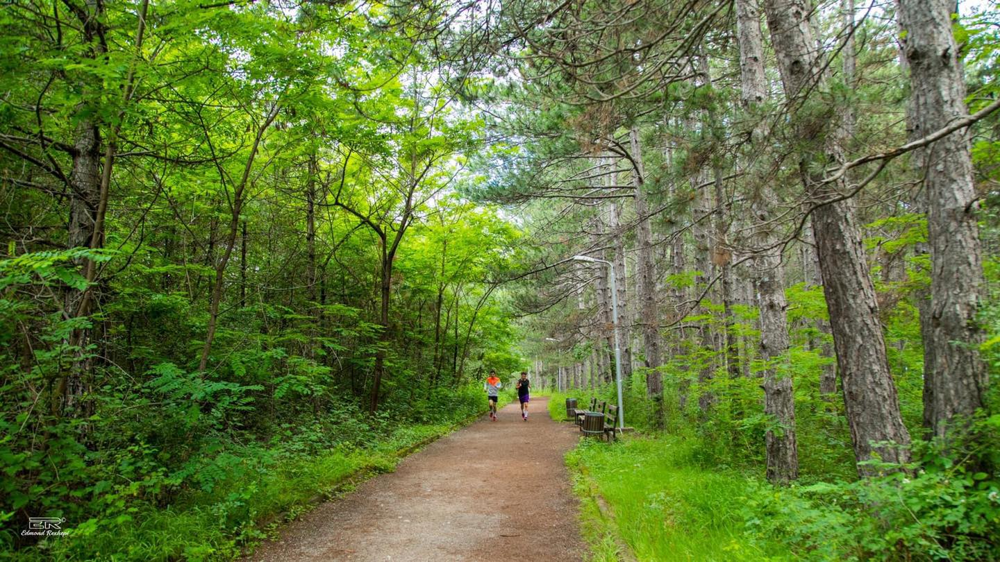
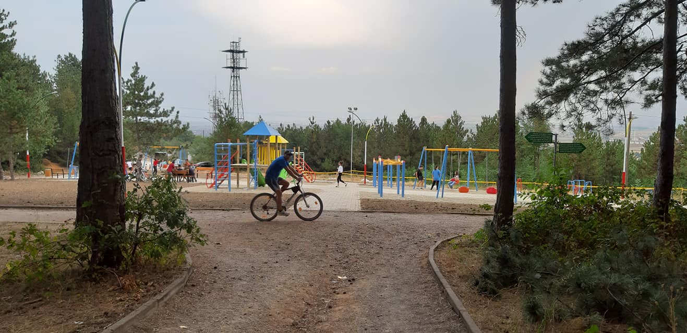
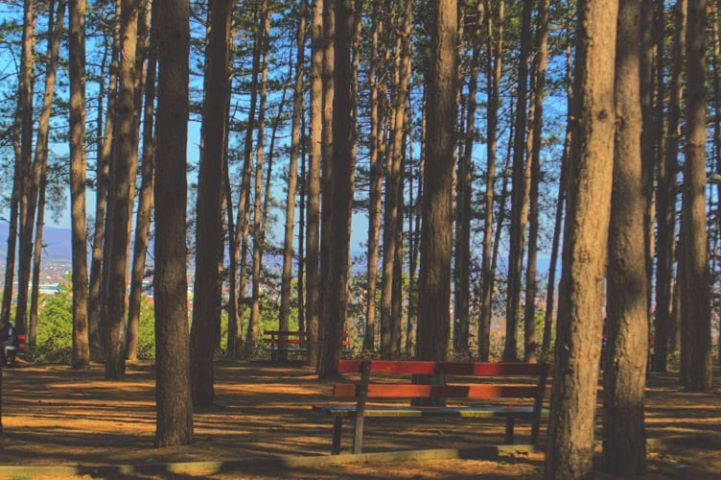
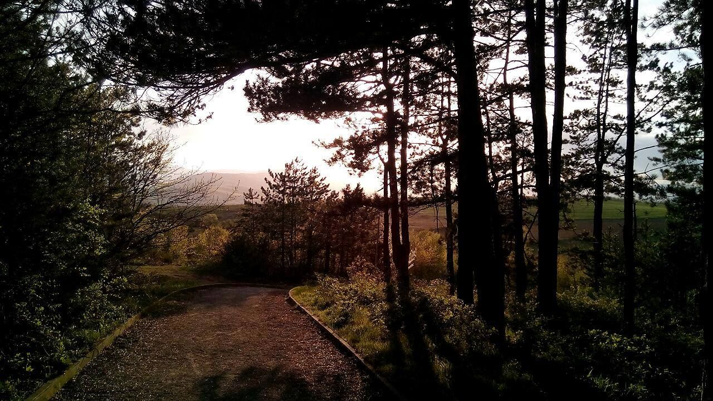

Parku i Lirisë

Parku i lirisë ndodhet 2.5km larg nga qendra e qytetit të Ferizajt.
Nga nevoja e qytetarëve që të relaksohen pas rutinës javore , komuna
e Ferizajt ka investuar në infrastrukturën e gjelbërt duke ndërtuar dhe
strukturuar parkun e lirisë . Ky park posedon shtigje per ecje , vende
ulëse për të pushuar , këndin e lojërave për fëmijë si dhe freskinë e qindra pishave.
Si vend preferohet nga shumë qytetarë për ta kaluar kohën e tyre të lirë.
Ndryshe pishat e parkut të lirisë , konsiderohen mushkëritë e qytetit.
Për më shumë informata rreth këtij atraksioni natyror , klikoni këtu.




Na Kontaktoni
af58102@ubt-uni.net
va57264@ubt-uni.net
Website zyrtar i Komunës se Ferizajt:
https://kk.rks-gov.net/ferizaj/
Kontakti i drejtorisë për turizëm:
038 200 46010
@2022 | Të gjitha të drejtat e rezervuara